Watchdoc ScanCare - Enregistrer et gérer les licences
Prérequis
Pour utiliser Watchdoc ScanCare, vous devez l'enregistrer à l'aide d'une licence acquise auprès du service commercial de Doxense®.
Vous pouvez également activer Watchdoc ScanCare en mode Démonstration à l'aide d'une licence spécifique délivrée pour une durée de 30 jours.
Accéder à l'interface d'enregistrement des licences
Au terme de la phase initiale d'installation de Watchdoc ScanCare,
-
si la case Lancer Watchdoc ScanCare était cochée, l'interface d'administration s'affiche ainsi qu'une boîte de dialogue vous invitant à enregistrer une licence ;
-
si la case Lancer Watchdoc ScanCare n'était pas cochée, cliquez sur le raccourci créé sur le bureau lors de l'installation pour accéder à l'interface d'administration, puis cliquez sur le menu Outils > Licences pour accéder à l'interface d'enregistrement.
è la boîte Informations de Licence > Enregistrement s'affiche ;
-
cochez la case Non, je ne suis pas encore utilisateur de Watchdoc ScanCare si vous n'avez encore jamais demandé de clé de licence pour cette application ;
-
cochez la case Oui, je suis déjà utilisateur de Watchdoc ScanCare si vous disposez déjà d'une clé de licence et d'un numéro de client pour cette application.
Enregistrer la licence en tant que nouveau client
Lorsque vous n'êtes pas encore client, vous devez vous enregistrer en tant que client avant de pouvoir enregistrer votre licence :
-
cochez la case Non, je ne suis pas encore utilisateur de Watchdoc ScanCare ;
-
cochez la case Sélectionner l'interface réseau à utiliser pour la licence ;
-
cliquez sur le bouton Suivant ;
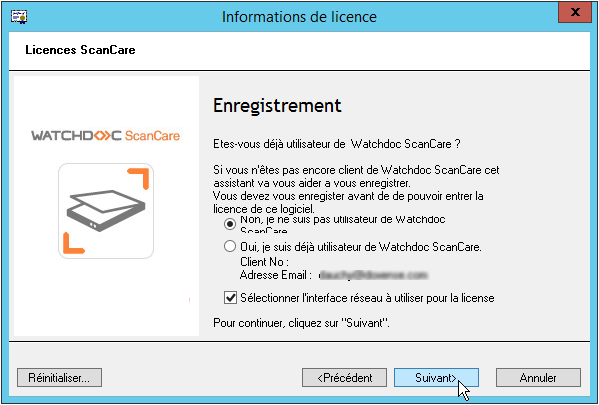
-
Dans le formulaire d'enregistrement qui s'affiche, saisissez toutes les informations permettant de vous enregistrer comme nouveau client, puis cliquez sur Suivant :
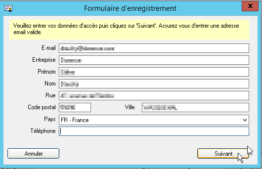
è Les données saisies sont résumées et affichées dans la boîte Informations client que vous pouvez imprimer au terme de l'enregistrement.
Dans la boîte Gérer les licences, plusieurs options s'affichent :
-
Obtenir des licences d'essai : cochez cette case si vous ne détenez pas de clé de licence et souhaitez tester l'application à l'aide d'une licence temporaire ;
-
Entrez votre code de licence : cochez cette case si vous détenez une clé de licence et souhaitez la saisir dans l'application ;
-
Afficher les licences actuelles : cochez cette case si vous souhaitez afficher toutes les licences déjà enregistrées dans l'application ;
-
Recharger les informations : cochez cette case pour recharger toutes les informations de licences présentes sur le site. Cette fonction peut être utile dans le cas d'un dysfonctionnement de l'application.
-
Pour enregistrer une licence, cochez Entrez votre code de licence :
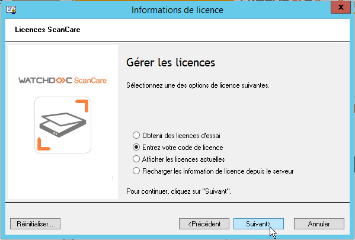
-
Dans le gestionnaire de licences qui s'affiche, saisissez le Code de la licence ;
-
Cliquez sur le bouton Ajouter une clé de licence.
è la clé de licence s'affiche dans la liste, précédée d'un pictogramme informant sur son statut. (cf. légende).
-
Saisissez le nom du vendeur dans le champ dédié, puis cliquez sur OK :
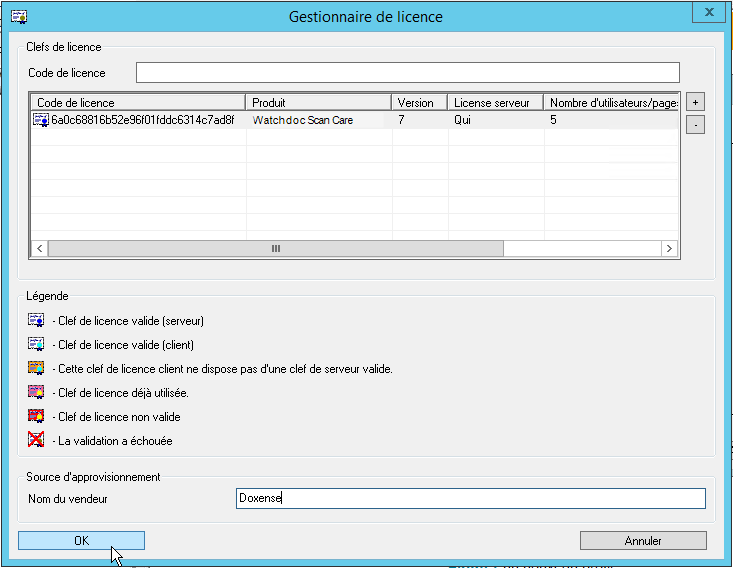
è L'interface se ferme en vous informant qu'aucun périphérique n'est assigné à la licence. Il convient donc ensuite d'assigner le périphérique à la licence.
Enregistrer une licence comme client
Si vous avez déjà déclaré une licence, vous êtez alors considéré comme client et pouvez directement accéder à l'interface de configuration de Watchdoc ScanCare.
Pour ajouter une licence supplémentaire dans l'outil de configuration :
-
depuis le bureau du serveur, cliquez sur le raccourci ScanCare installé sur le bureau du serveur ;
-
dans l'interface de gestion ScanCare, cliquez sur le menu Outil > Licences ;
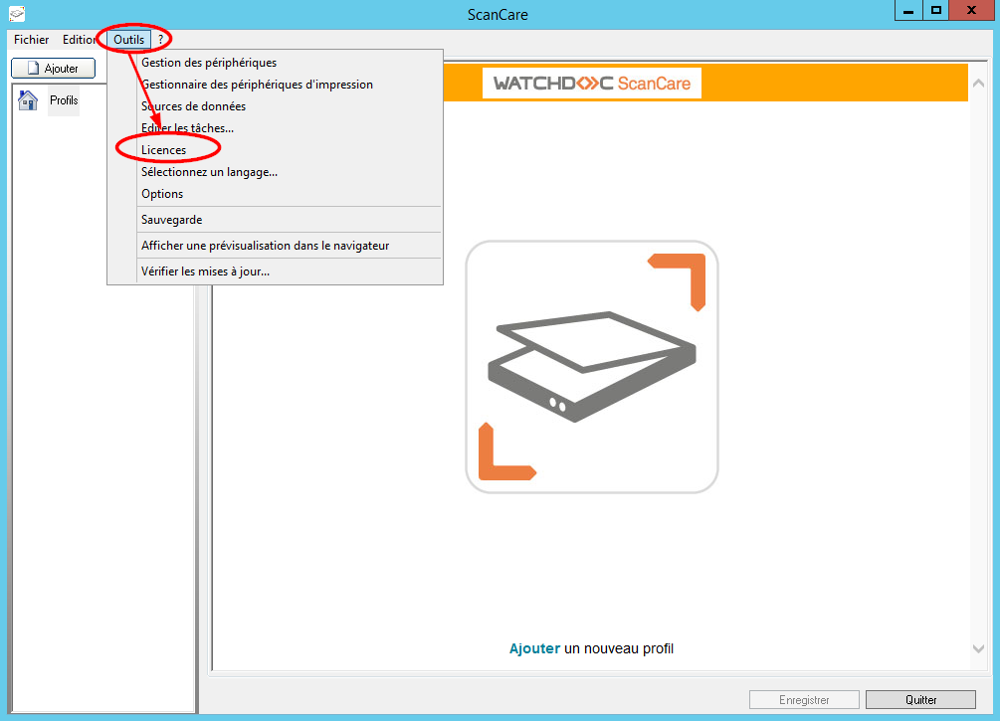
èVous accédez à un assistant d'enregistrement des licences.
-
Cliquez sur le bouton Suivant pour poursuivre l'enregistrement.
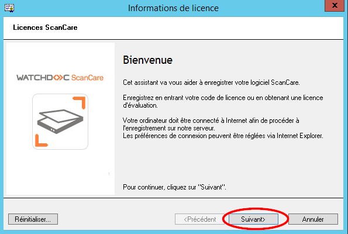
-
Optez ensuite pour le bouton radio Oui, je suis déjà utilisateur de Watchdoc ScanCare ;
-
Cliquez sur le bouton Suivant :
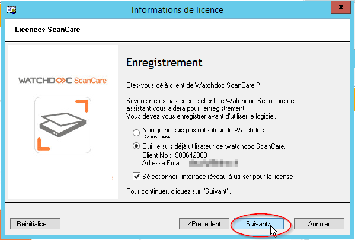
-
optez pour le choix qui correspond à votre enregistrement ;
-
cliquez sur Suivant :
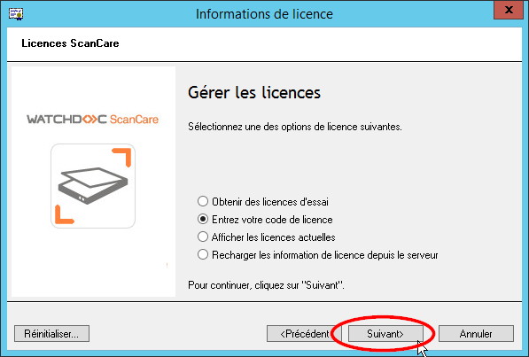
-
dans l'interface Gestionnaire de licence qui apparaît, saisissez le code de licence dans le champ dédié :
-
cliquez ensuite sur le bouton
 Ajouter une clé de licence ;
Ajouter une clé de licence ;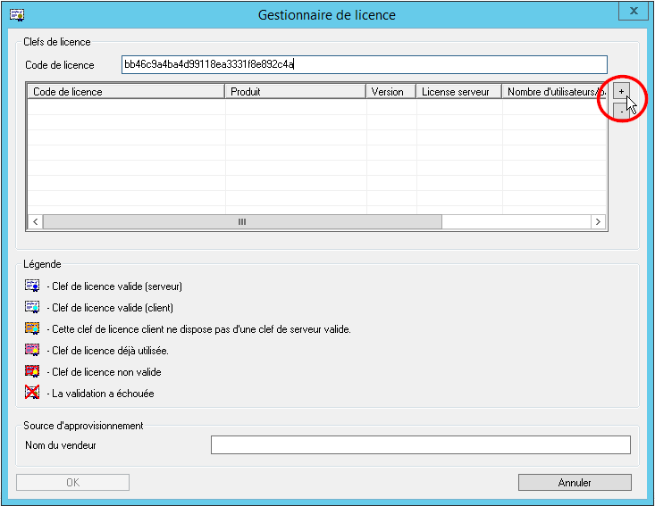
è la clé de licence s'affiche alors dans le tableau des licences ;
-
saisissez le Nom du vendeur dans la zone dédiée ;
-
cliquez sur le bouton OK :
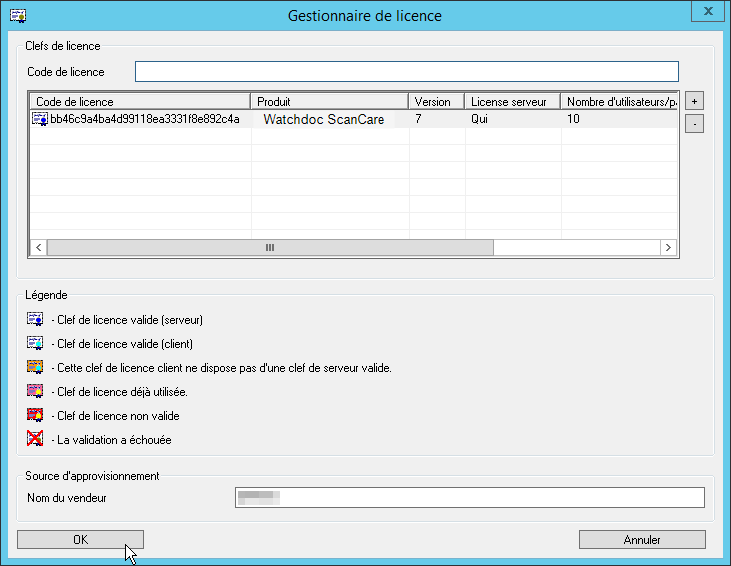
è Une interface affiche le nombre de licences disponibles :
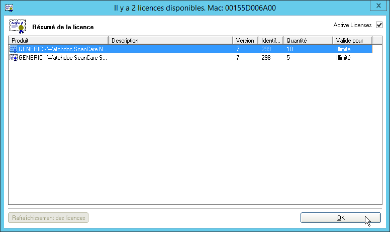
-
Cliquez sur OK pour fermer l'interface.
è L'assistant confirme la fin de l'enregistrement.
-
Cliquez sur Terminer pour fermer l'assistant.